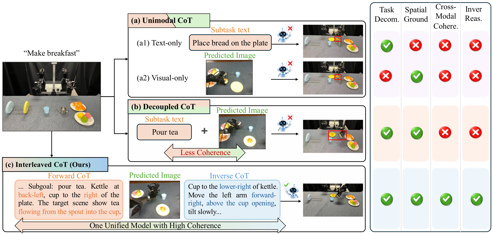
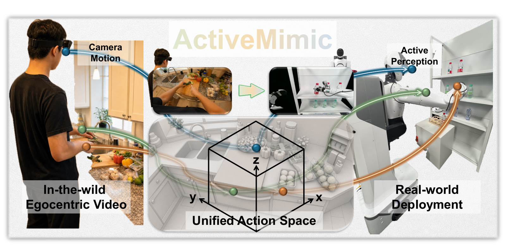
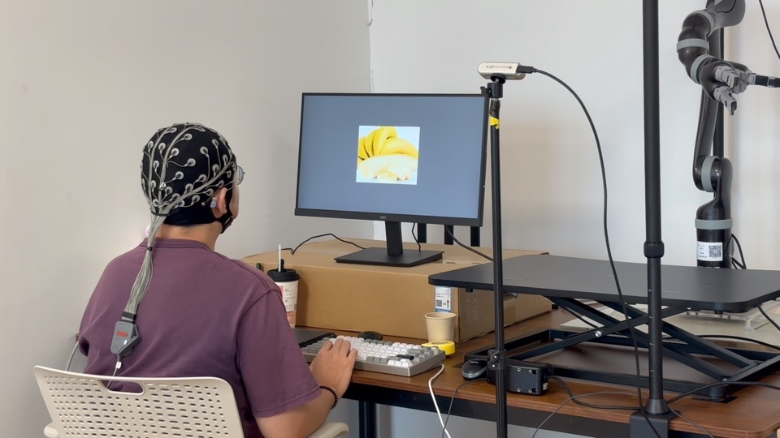
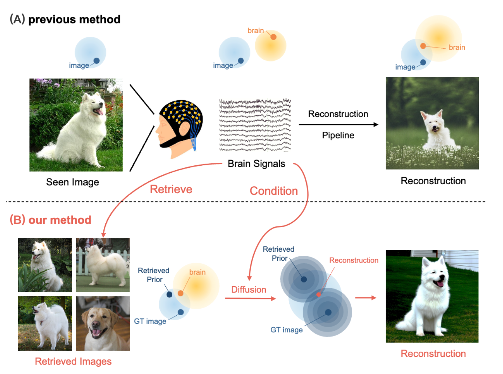
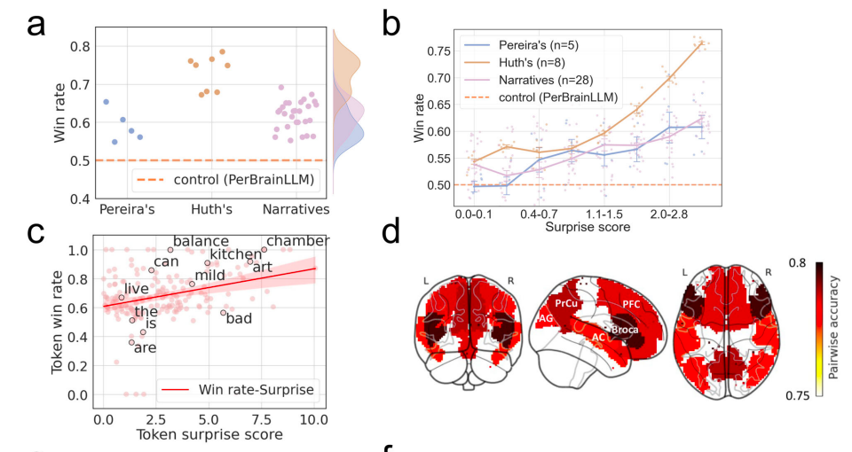

I am an Assistant Professor in Institute of Trustworthy Embodied AI at Fudan University（复旦大学可信具身智能研究院）. I received my bachelor and Ph.D. degree from Department of Computer Science and Technology in Tsinghua University, Beijing, China. My major research areas are about Embodied AI, Multimodal Computing, and Brain-Computer Interface. I am actively looking for self-motivated students to join my research group. If you are passionate about building the future of AI, please feel free to reach out. 本人依托复旦大学可信具身智能研究院和视觉与学习实验室，正积极招募有自驱力的学生加入研究团队（招生说明），请随时沟通（邮箱：zyye@fudan.edu.cn）。
News
- 2026.09, our papers titled ThinkingVLA: Interleaved Vision and Language Reasoning for Robotic Manipulation and ActiveMimic: Egocentric Video Pretraining with Active Perception are accepted by CoRL 2026.
- 2026.07, we released a 5,000-hour tactile manipulation dataset alongside models trained upon it to advance research on contact-rich robotic manipulation. Dataset
- 2026.07, we present automotive lamp assembly robot at WAIC 2026, which has been reported by mainstream media such as CCTV News, Xinhua News, and Fudan University. News
- 2026.06, our paper titled Seeing Touch from Motion: A Unified Modality-Aware Visuo-Tactile Policy with Tactile Motion Correlation is accepted by ECCV 2026.
- 2026.05, our paper titled How do Human Processes AI-generated Hallucination Contents: a Neuroimaging Study is accepted by ICML 2026.
- 2026.04, our papers titled Language reconstruction with brain predictive coding from fMRI data and TwinVoice: A Multi-dimensional Benchmark Towards Digital Twins via LLM Persona Simulation are accepted by ACL 2026 main conferences and findings, respectively.
- 2026.04, our papers titled Individual Turing Test: A Case Study of LLM-based Simulation Using Longitudinal Personal Data and Surge: A benchmark and evaluation framework for scientific survey generation are accepted by SIGIR 2026.
- 2026.02, our paper titled FluxMem: Adaptive Hierarchical Memory for Streaming Video Understanding is accepted by CVPR 2026.
- 2026.01, our paper titled Robotic Grasping and Placement Controlled by EEG-Based Hybrid Visual and Motor Imagery is accepted by ICRA 2026.
- 2026.01, our paper titled SLEEP2VEC: Unified Cross-modal Alignment for Heterogeneous Nocturnal Biosignals is accepted by ICLR 2026.
- 2025.10, I was invited to join the discussion about World Model at CCF YOCSEF. News
- 2025.10, I gave an invited talk about AI System Empowered by Neuro Feedback at Computational Neuro-Linguistics Forum.Video
- 2025.08, I gave an invited talk about "Tips for New Researchers" at NLPCC 2025. Slides
- 2025.08, our paper titled SimVBG: Simulating Individual Values by Backstory Generation is accepted by EMNLP 2025.
- 2025.05, our paper titled EEG reveals the cognitive impact of polarized content in short video scenarios is available in Nature Scientific Reports.
- 2025.04, thrilled to announce that I have three co-authered paper accepted by SIGIR 2025, titled Brain Image Reconstruction with Retrieval-Augmented Diffusion, Parametric Retrieval Augmented Generation, and Understanding the Effect of Opinion Polarization in Short Video Browsing.
- 2025.04, I will attend ICLR 2025 in person for our paper titled Learning LLM-as-a-Judge for Preference Alignment.
- 2025.03, our paper titled Generative Language Reconstruction from Brain Recordings is published in Nature Communications Biology.
- 2024.09, our paper titled Pre-trained Model for EEG-based Emotion Recognition won the Best Paper Nomination at CCIR 2024.
- 2023.12, I gave an invited talk in the Institute of Information in University of Amsterdam about Language Generation from Brain Recordings. Slide
- 2023.07, I gave an invited talk to Lenovo Inc about Context-based Brain Decoding. Slide
- 2023.09, I gave an invited talk in Machine Learning Section of Copenhagen University about Brain-Computer Interface for Search. Slide
Research
My research aims to build an embodied intelligent system that can perform general human behaviors and interact with humans more effectively. Recently, my interested topics include:
- Memory Mechanism of Embodied AI: Developing models that can remember, reason, and use past experiences to interact with real-world physical environments.
- Fine-Grained Embodied Manipulation: Realizing robotic atomic manipulation capabilities via reinforcement learning to complete precise, fine-grained physical tasks.
- Multimodal AI Cognition and Verifiability: Investigating how cognitive abilities and complex behaviors emerge in AI system and whether these capabilities are verifiable to humans.
Selected Publications

ThinkingVLA: Interleaved Vision and Language Reasoning for Robotic Manipulation
Conference on Robot Learning (CoRL) 2026
We interleave visual prediction and language reasoning to plan actions for long-horizon robotic manipulation.

ActiveMimic: Egocentric Video Pretraining with Active Perception
Conference on Robot Learning (CoRL) 2026
We learn active perception and manipulation jointly from egocentric human video, treating camera motion as viewpoint actions.

VLA-Pro: Cross-Task Procedural Memory Transfer for Vision-Language-Action Models
Arxiv 2026
We develop a cross-task procedural memory transfer framework that yields up to 51% improvement on existing VLAs.

FluxMem: Adaptive Hierarchical Memory for Streaming Video Understanding
CVPR 2026
We propose a novel memory module that can adaptively learn and store streaming video features in a hierarchical manner.

Robotic Grasping and Placement Controlled by EEG-Based Hybrid Visual and Motor Imagery
ICRA 2026
We develop a robotic grasping system that can control the placement of objects based on human's mental imagery.

Brain Image Reconstruction with Retrieval-Augmented Diffusion
SIGIR 2025
We propose a retrieval augmented diffusion method to reconstruct images with brain input.

Generative Language Reconstruction from Brain Recordings
Nature Communications Biology
We propose a method to reconstruct language from brain recordings in a unified generative manner.
Experience
| Year | Experience |
|---|---|
| 08.2025- | Assistant Professor, Institute of Trustworthy Embodied AI, Fudan University, China. |
| 08.2020-06.2025 | Ph.D. student, Department of Computer Science and Technology, Tsinghua University, China. |
| 11.2023-02.2024 | Guest Ph.D. student, Institute of Informatics, University of Amsterdam, Netherlands. |
| 07.2023-11.2023 | Guest Ph.D. student, Department of Computer Science (DIKU) and the Pioneer Centre for AI, University of Copenhagen, Denmark. |
| 08.2016-07.2020 | B.S. student, Department of Computer Science and Technology, Tsinghua University, China. |
Academic Service
-
Journal Reviewer: Nature, Nature Comm. Bio., Nature Dis. Com., ACM TOIS, ACM TKDD, ACM TOMM, SCIS
-
Conference Senior PC / PC Member: ICLR, NeurIPS, ICML, SIGIR, WWW, ACM MM, CVPR, CIKM, KDD, ACL, EMNLP
-
Other Service: CCIR Student Contact (2024.8–2025.8)
Honors and Awards
- 2025, Ph.D. Dissertation Award of ACM Shanghai.
- 2025, Ph.D. Dissertation Award of CIPS.
- 2025, Outstanding Graduate of Beijing.
- 2025, Qihang Gold Award, Tsinghua University.
- 2022, China National Scholarship, Chinese Government.
- 2017, 2018, 2023, 2024. Overall Excellence Scholarship, Tsinghua University.
- 2019, Academic Excellence Scholarship, Tsinghua University.
- 2016, Silver medal in Chinese Mathematical Olympiad(CMO), China Mathematical Federation.
Teaching Experience
- 2026. Instructor at “Image Processing and Computer Vision”, Fudan University.
- 2024. Teaching assistant at GenAI summer school, Tsinghua University. (Instructor at “Retrieval-argumented generation”.)
- 2020-2025. Teaching assistant at “Fundamental Search Engine”, Tsinghua University.
Competitions
- We won the 1st place in TASK 2 (Relevant Statue Retrieval Task) of AILA 2019 (Artificial Intelligence for Legal Assisstance). Working Notes.
- We won the 1st place in the NTCIR-15 Micro-activity Retrieval Task. Working Notes.
Datasets
-
N0 Dataset (OpenNeoData). A 5,000-hour open-source visual-tactile manipulation dataset spanning six embodiments and over 250 tasks, released as part of N0-Foundation: Towards the Age of Tactile Intelligence.
-
EEG-Hallucination Dataset. In our Paper How do Human Processes AI-generated Hallucination Contents: a Neuroimaging Study.
-
EEG-Imagenet Dataset. In our Paper EEG-imagenet: An electroencephalogram dataset and benchmarks with image visual stimuli of multi-granularity labels.
-
EEG-SVC Dataset. In our SIGIR’25 Full paper EEG-svrec: An eeg dataset with user multidimensional affective engagement labels in short video recommendation.
-
Search-Brainwave Dataset. In our SIGIR’22 Full Paper Why Don’t You Click: Understanding Non-Click Results in Web Search with Brain Signals.
-
UERCM Dataset. In our The Web Conf’22 Full Paper Towards a Better Understanding of Human Reading Comprehension with Brain Signals.
-
TianGong-CRL Dataset. In our ASIST’20 Poster Investigating COVID-19-Related Query Logs of Chinese Search Engine Users.